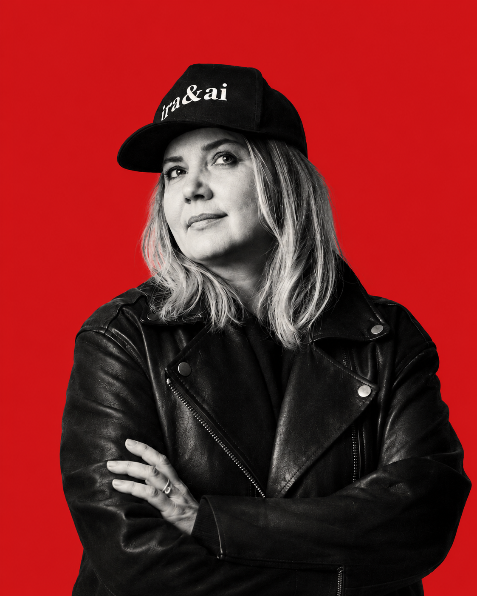

Нет, к сожалению, я не о том, о чём вы подумали.
Я о том, что у нас с вами нет времени на мусор. Мы прагматики, скептики и не всегда очень добрые. Нам надо, чтобы оно работало сразу, и работало хорошо.
Есть голова, компьютер и желание разобраться? Поздравляю, вы уже достаточно хороший пользователь нейросетей. Остальному научу.

20 с лишним лет в креативе и событийном маркетинге. Последние годы копаю нейросети вживую и перевожу их на человеческий язык для людей, которые в своей сфере состоялись, а к ИИ подходят с мыслью «это не для моего ума».
Я не гуру, я гуманитарий. Я сама была в состоянии «это не для моего ума», поэтому знаю дорогу оттуда лично, а не по чужим картам. Иду чуть впереди, копаю продукт вживую, а человек идёт рядом и забирает и метод, и состояние «мне тоже дано».
Между техноблогерами на птичьем и продавцами воздуха я третья: переводчик с технического на человеческий, с юмором.
читателей: органически, без рекламы и воронок.
Честно и своими руками.
Все продают план или инструмент. Между планом и результатом стоит человек, и именно об него всё спотыкается. Я проектирую переход человека через страх, а не выдаю ещё один список сервисов.
Можно, конечно. Информации океан. Вопрос только во времени и в ямах, где обычно бросают: я через них уже провела и себя, и других. С проводником путь короче.
Лучшее доказательство: корпоративные клиенты возвращаются за повторной работой.
корпоративные клиенты возвращаются за повторной работой. Лучший отзыв: когда покупают снова.
курс ClaudeHub продаётся в записи, без ведущего в прямом эфире: люди покупают систему, а не шоу.
Тренинги и программы под конкретный отдел и задачу. Внедряю через человека, а не ставлю технологию поверх стеклянных глаз. Ваш сервис под ключ не строю: делаю так, что ваши люди работают с ИИ сами.
Диагностика от 150к · день-воркшоп от 360к · программа от 800к · перестройка процессов от 1,5 млн
Метод «Сначала человек» на ваших рабочих задачах: из чатика с чужими промптами, в свою систему. Стартуем всегда по понедельникам.
4 недели · 6-8 мест · 50 000 ₽. Поток 0 (7 сентября): 5 мест по 35 000 ₽
Работа один на один над вашей задачей и вашим голосом. По запросу.
ClaudeHub: 18 уроков по 10 минут, простой вход в Claude на русском · 6 500 ₽
Карусели с ИИ, система создания каруселей · 3 500 ₽
Покупается на сайте, приходит на почту автоматически
Можно просто переслать эту страницу. А своими словами, вот три готовые фразы:
Напишите коротко про вашу задачу, подберём формат. Иногда это разговор, иногда анкета-диагностика.
Написать Альфреду, моему боту в Telegram →